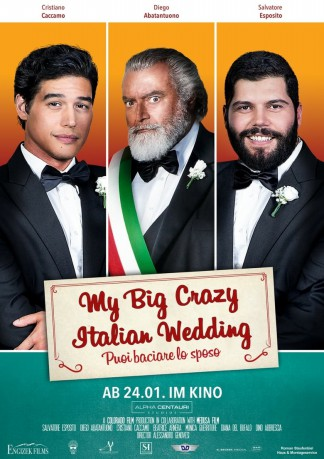

#12106 My Big Crazy Italian Wedding
Alternativ: My Big Gay Italian Wedding (Englischer Titel)
 
 IMDB-Wertung: 5.9 / 10
IMDB-Wertung: 5.9 / 10  Tomatometer: 80
Tomatometer: 80  Metascore: 0
Metascore: 0 
Antonio (Cristiano Caccamo) und sein Freund Paolo (Salvatore Esposito) sind frisch verlobt, leben in Berlin und beschließen gemeinsam in Antonios Heimat zu fahren. Dort wollen sie seiner religiösen Familie ihre Beziehung und seine Homosexualität offenbaren.Dort steht das kleine traditionelle, katholische Dorf nun vor der Aufgabe, zu lernen, dass Liebe keine Grenzen kennt Mutter Anna (Monica Guerritore) gibt der Verbindung sofort ihren Segen. Und auch Antonios Vater Roberto (Diego Abatantuono hat seine ganze Politik als Bürgermeister auf den Pfeilern von Integration und Gastfreundschaft aufgebaut – doch lebt er diese Werte auch? Zu allem Übel taucht auch noch Antonios Ex-Freundin auf. Sie liebt ihn offensichtlich immer noch und stellt die Beziehung der beiden Männer auf eine harte Probe.
Jahr: 2018
Dauer: 90 Minuten
FSK: 12
Land: Italien Studio: Alpha Centauri StudiosTonspuren:
Untertitel:
Auflösung: 1080p (1920x808) Größe: 3235 MB
Genre: Komödie
Regisseur: Alessandro Genovesi
Drehbuch: Alessandro Genovesi, Giovanni Bognetti, Anthony J. Wilkinson
Soundtrack: Andrea Farri
Darsteller:
- Monica Guerritore als Anna
- Salvatore Esposito als Paolo
- Sergio Leone als
- Diego Abatantuono als Roberto
- Cristiano Caccamo als Antonio
- Dino Abbrescia als Donato Lavopa
- Diana Del Bufalo als Benedetta
- Beatrice Arnera als Camilla
- Rosaria D'Urso als Madre di Paolo
- Antonio Catania als Don Francesco
- Enzo Miccio als Enzo Miccio
- Vito Facciolla als
- Andrea Sartoretti II als
- Fulvia Patrizia Olivieri als
- Andrea Benedettini als
- Vanna Mazza als
- Giovanni Tammaro als
- Loriano Fredduzzi als
- Chiara Fredduzzi als
- Gabriele Meriggi als
- Virginia Settimi als
- Luca Perriccioli als
Datei: X:\2018(G-M)\My Big Crazy Italian Wedding (2018, FSK12, 1920x808).mkv seit 05.12.2019
Festplatte: HD 2018(G-Z)-2019(A-Z)
 Es gibt insgesamt 138 Filme in der Gruppe '2018(G-M)'
Es gibt insgesamt 138 Filme in der Gruppe '2018(G-M)'